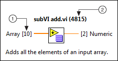
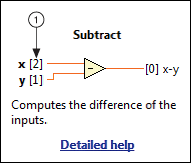

Open example�
Open example�
In order to complete VI Scripting tasks that involve the terminals of a node or a connector pane, you must use terminal and connector pane pattern indexes. You can configure the Context Help window to display these indexes for most nodes and VIs, thereby making this information readily available while you program in LabVIEW.
To display terminal and connector pane pattern indexes in the Context Help window, enable VI Scripting and place a checkmark in the Display additional VI Scripting information in Context Help window checkbox on the VI Server page of the Options dialog box. After you make this selection, the Context Help window looks similar to one of the following illustrations:
|
 |
 |
| 1��Terminal index�Identifies the position of the associated terminal within the array of terminal references returned by the Node:Terminals[] property of the displayed node. You can use the Terminals[] array and the terminal index with the Index Array function to obtain a reference to a specific terminal. You commonly must perform this task to navigate from a node to a connected wire or to wire data to a desired terminal using VI Scripting.�� | |
| 2��Pattern index�Identifies the connector pane pattern of the displayed VI. You can use the pattern index to configure the connector pane of a VI using VI Scripting. Only VIs display a pattern index in their Context Help window.�� | |
Refer to the Connector Pane Pattern Reference VI located in the labview\examples\Application Control\VI Scripting\Connector Pane directory for an illustration of the connector pane pattern associated with each pattern index.
Open example�